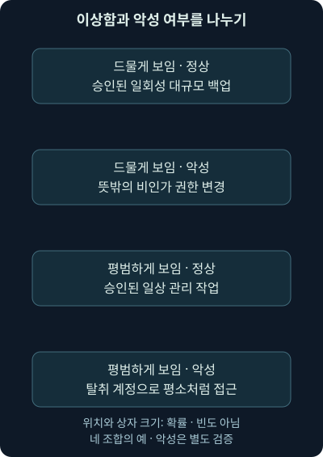
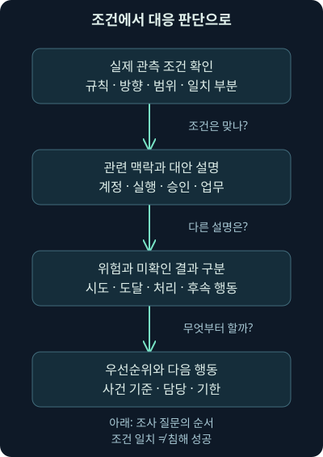
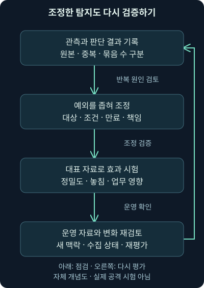

시그니처·이상 탐지와 경보의 해석
첫째 날 8강. 특징 일치와 기준선·임계값을 이해하고, 자체 성능 계산·원본 검증·정보 보강을 조사 판단에 연결합니다.
1. 같은 빨간 표시라도 묻는 질문이 다릅니다
가상 대기열에 “알려진 악성 통신 특징과 일치”라는 경보와 “이 계정의 처음 보는 위치에서 로그인”이라는 경보가 있습니다. 둘 다 확인할 필요가 있지만 같은 질문으로 조사하면 중요한 차이를 놓칩니다. 첫 번째는 무엇과 얼마나 구체적으로 맞았는지, 두 번째는 무엇을 평소와 다르다고 정했는지부터 확인해야 합니다.
7강에서 이벤트·경보·사건과 전달 경로를 나눴습니다. 이번 8강의 범위는 특징 일치 탐지와 이상 탐지, 기준선과 임계값, 규칙 이름의 한계, 경보 품질 계산, 보강과 조사 판단입니다. 설명을 충분히 유지하려고 경보 모듈을 두 회차로 나눴습니다. 다음 9강은 사건을 기록하고 처리하는 흐름으로 이어집니다.
이 강의의 회사·주소·탐지명·숫자·검증 정답은 모두 자체 가상 사례입니다. 뒤의 Python 비율 계산만 자체 숫자로 직접 실행했습니다. 실제 공격·IDS 규칙·VM·패킷 파일을 실행해 얻은 탐지 성능이 아닙니다. 원본 워크북·실습 VM은 확인한 자료 위치에서 확보하지 못했으므로 원래 실습을 수행했다고 표현하지 않습니다.
2. 찾는 물건의 특징을 아는 경우
분실물 안내문에 “파란색 손잡이, 오른쪽에 작은 흠집이 있는 검은 가방”이라고 적혀 있다고 합시다. 특징이 구체적일수록 찾는 대상을 좁히기 쉽습니다. 반대로 “검은 가방”만으로는 무관한 물건도 많이 걸립니다. 안내문이 오래되었거나 물건의 외형이 바뀌었다면 놓칠 수도 있습니다.
보안의 시그니처, signature는 관측 자료에서 찾도록 정한 특징이나 조건입니다. 특정 내용·구조·행동의 조합을 검사할 수 있습니다. 이 단어는 암호 기술에서 서명자를 검증하는 전자서명과는 다른 뜻으로 사용합니다. 탐지 조건이 일치했다고 작성자의 신원이나 공격자의 의도가 증명되는 것은 아닙니다.
IOC, Indicator of Compromise는 침해와 관련될 가능성을 보여주는 기술적 관측 단서입니다. 주소·도메인·파일 해시 등이 그 예입니다. 해시는 파일 내용에서 계산한 비교용 값입니다. IOC 목록 일치도 특징 기반 탐지의 한 방식이지만, 목록의 단서가 얼마나 오래되고 구체적인지에 따라 해석이 달라집니다.
3. 특징이 맞는지와 공격이 있었는지는 두 단계입니다
자체 가상 목록에 download.example이 들어 있고 접속 기록에서 같은 문자열이 발견되었다고 합시다. 먼저 목록이 도메인 전체를 비교하는지, 하위 도메인이나 URL 경로까지 다루는지 확인해야 합니다. URL은 웹 자원의 위치를 나타내는 주소이고 도메인은 그 안에서 호스트 이름을 구성하는 부분입니다. 단순 문자열 포함 검색은 무관한 긴 이름이나 설명 필드까지 맞출 수 있습니다.
비교가 정확하더라도 그 시점의 주소 할당과 서비스 운영, 정보의 유효 기간, 승인된 시험인지 여부를 더 확인해야 합니다. 한 주소를 여러 서비스가 공유하거나 정상 서비스가 악용될 수도 있습니다. 목록과 맞았다는 사실에서 바로 특정 악성 프로그램 실행이나 자료 유출로 건너뛰지 않습니다.
분실물 비유도 여기서 달라집니다. 네트워크 특징은 여러 프로그램이 같은 통신 라이브러리를 쓰면서 공유할 수 있고 공격자가 일부러 정상 활동처럼 보이게 만들 수도 있습니다. 관측 특징은 중요한 단서이지만 고유한 신분증은 아닙니다.
4. 평소와 다르다는 것을 찾는 경우
매일 오전에 작은 상자 두 개가 오던 사무실에 한밤중 큰 상자 수십 개가 도착했습니다. 수상하게 볼 이유는 있지만 이사나 행사 준비일 수도 있습니다. 이상 징후, anomaly는 어떤 기준에서 예상과 다른 관측을 뜻합니다. 그 차이가 실제 위험인지 판단하려면 업무 맥락이 더 필요합니다.
기준선, baseline은 비교 대상으로 삼는 평소의 범위나 모형입니다. 계정별 접속 시간, 단말 역할별 전송량, 같은 업무 집단의 행동처럼 비교 단위를 정해야 합니다. 전사 평균 하나로 관리자와 일반 직원, 백업 서버와 노트북을 함께 평가하면 정상 차이를 위험으로 오해하기 쉽습니다.
이상 탐지는 꼭 인공지능이나 복잡한 통계 모형을 요구하지 않습니다. “이 계정이 처음 본 단말에서 인증했다”는 간단한 조건도 가능하고 시간대별 범위를 학습하는 방식도 가능합니다. 어떤 구현이든 비교한 자료와 기준 기간, 예외와 누락의 의미를 알아야 합니다.
5. 처음 봤다는 말에는 관측 기간이 숨어 있습니다
가상 탐지가 최근 7일의 로그인 단말을 기억한다고 합시다. 8일 전에 쓰던 노트북으로 오늘 로그인하면 처음 보는 단말로 표시될 수 있습니다. 실제로 새로 산 단말인지와 탐지가 가진 기록에서 새롭게 보이는지는 다릅니다.
기준선의 자료가 하루 동안 끊겼거나 계정 이름을 잘못 연결해도 비슷한 문제가 생깁니다. 신규 입사자·업무 이동·원격 접속 경로 변경·휴일·월말 정산처럼 정상 업무가 달라지는 조건도 봐야 합니다. 정상 변화의 근거를 확인하지 않고 예외로 등록하면 실제 오용까지 가릴 수 있습니다.
가상 “새 위치” 경보도 위치 추정 자료, 회사의 VPN이나 프록시 경유 여부, 계정과 단말의 연결을 확인합니다. VPN, Virtual Private Network는 다른 네트워크 위에 가상 사설 연결을 구성하는 방식입니다. 외부에서 보이는 접속 주소가 실제 단말의 위치와 다를 수 있습니다. IP 기반 위치 추정은 실제 사람의 이동 경로 그 자체가 아닙니다. 두 로그인 시각만으로 사람이 비현실적으로 이동했거나 계정을 탈취당했다고 확정하지 않습니다.
6. 임계값은 경보를 만드는 경계입니다
임계값, threshold는 조건을 만족했다고 판정할 경계입니다. “최근 5분에 같은 계정의 실패가 5건 이상이면 표시”라는 자체 규칙을 생각해 보겠습니다. 5분은 비교 시간 구간, 같은 계정은 묶는 기준, 실패는 셀 활동, 5건 이상은 경보 조건입니다.
이 조건이 찾는 것은 많은 인증 실패입니다. 비밀번호 대입 공격일 수 있지만 잘못 저장된 비밀번호로 계속 재시도하는 정상 프로그램일 수도 있습니다. 반대로 공격자가 여러 계정에 한두 번씩만 시도하면 계정별 5건 조건에 걸리지 않을 수 있습니다. 반복 실패를 정확히 찾는 것과 모든 계정 공격을 찾는 것은 다른 목표입니다.
구간의 경계도 결과를 바꿉니다. 현재 시각을 09:05:00 UTC로 놓고 (09:00:00, 09:05:00]을 쓰면 왼쪽 괄호는 시작 시각을 제외하고 오른쪽 대괄호는 끝 시각을 포함한다는 뜻입니다. 정확히 09:00:00에 있던 항목은 세지 않습니다. 실제 탐지의 구간·실행 간격·지연 자료 처리 방식은 구현 문서와 시험으로 확인해야 합니다.
7. 출발 주소로 묶으면 더 확실해질까요?
가상 회사의 공인 출구 주소 하나를 여러 직원이 공유한다고 합시다. 같은 출발 주소의 실패를 합치면 다른 직원의 정상 오류가 한 공격처럼 보일 수 있습니다. 반대로 계정별로만 보면 여러 계정을 조금씩 건드리는 활동을 놓칠 수 있습니다. 어떤 단위를 쓰든 그 조건이 답하는 질문을 분명히 해야 합니다.
“같은 계정의 반복 실패”와 “같은 출처에서 여러 계정으로 번진 실패”를 서로 다른 탐지로 설계할 수 있습니다. 그러면 같은 원자료에서 서로 다른 관점을 얻습니다. 다만 두 경보가 같은 기록에서 나왔다면 독립된 공격 증거 두 개로 과장하지 않습니다.
로그 수집이 중복되어 한 실패가 두 번 들어오면 임계값도 부풀려집니다. 원본 고유 ID와 출처·시간·계정 연결, 정상화 결과를 확인하고 원본 활동 수와 전달 기록 수를 나눠 셉니다. 7강에서 배운 출처와 중복 구분이 탐지 품질과 바로 연결됩니다.
8. 드문 행동과 나쁜 행동을 같은 축에 놓지 마세요
과거의 단순한 그림은 모든 악성 활동이 어떤 형태로든 이상하다고 가정하기도 했습니다. 하지만 분석가가 지금 수집한 특징과 기준선에서는 공격이 평범하게 보일 수 있습니다. 탈취된 계정으로 평소 시간에 정상 관리 도구를 쓰면 단순 빈도·시간 탐지에는 두드러지지 않을 수 있습니다.
반대로 한 번뿐인 대규모 승인 백업은 아주 드물어도 정상일 수 있습니다. 그러므로 “이상함”과 “악성임”을 별도 질문으로 두고 네 조합을 모두 고려해야 합니다. 실제 정답을 모르는 현장에서는 악성 여부 자체도 조사 중인 가설일 수 있습니다.

위에서 아래로 네 조합을 읽되 공격이 진행하는 순서로 읽지는 마세요. “평범하게 보임·악성” 칸을 남긴 것이 핵심입니다. 관측을 늘리면 새 특징이 보일 수 있지만, 현재의 이상 점수가 낮다는 이유로 그 칸을 지워서는 안 됩니다.
9. 규칙의 구현 방식과 탐지 목적도 나눕니다
IDS의 문자열 규칙으로 “평소 쓰지 않는 도구의 User-Agent”를 찾을 수 있습니다. User-Agent는 HTTP 요청에서 클라이언트가 자신에 관한 정보를 표시하는 헤더 값이며 바꿔 보낼 수도 있습니다. 규칙이 문자열을 사용했다고 해서 알려진 악성 활동만 찾는 것은 아닙니다. 정상일 수도 있는 활동을 선별하는 정책 탐지일 수 있습니다.
반대로 여러 행동의 조합으로 이미 알려진 공격 절차를 찾는 규칙은 단순한 문자열 목록보다 복잡할 수 있습니다. “시그니처 방식이냐, 이상 방식이냐”라는 이름만으로 정확성과 조사 순서를 고정하지 마세요. 실제로 검사하는 조건과 의도한 질문을 먼저 읽습니다.
아직 특징이 등록되지 않은 공격에서도 뜻밖의 실행·접근·전송 변화가 조사 단서가 될 수 있다는 점은 이상 탐지의 가치입니다. 다만 새 공격이라면 반드시 이상 경보가 난다고 보장하지 않습니다. 관측하는 특징에서 차이가 보이고 그 차이를 현재 조건이 잡아야 하기 때문입니다.
제품의 anomaly라는 로그 유형도 주의해야 합니다. 2026년 11월 4일 확인한 Suricata 8.0.2의 Anomaly 유형은 패킷·스트림·응용 계층 처리의 예상 밖 조건을 기록합니다. 이것을 곧바로 사용자 행동 기준선의 이상 점수라고 읽지 않습니다. 같은 단어가 가리키는 층이 다를 수 있습니다.
10. 경보 이름은 규칙을 찾는 표지판입니다
“공격 시도”, “악성 통신 의심”, “비표준 포트”라는 이름을 보면 각각 떠오르는 위험이 있습니다. 그러나 제목은 조건의 전부가 아닙니다. 규칙의 출처·번호·개정, 검사하는 방향과 버퍼, 일치 부분, 제외 조건과 참고 근거를 읽어야 무엇을 실제로 발견했는지 알 수 있습니다. 버퍼는 탐지 엔진이 분석을 위해 구분해 둔 자료 영역을 뜻합니다.
2026년 11월 4일 확인한 Snort 3 일반 규칙 옵션 문서에서 msg는 일치 때 표시할 메시지, gid는 생성 구성 요소, sid는 규칙 번호, rev는 규칙의 개정 번호를 뜻합니다. 이런 식별 정보는 맞은 규칙을 재확인할 단서이며 제목 자체가 관측 결과의 독립 검증은 아닙니다. Snort 3 문서의 의미를 다른 엔진·버전에 그대로 대입하지 않습니다.
규칙 내용을 보지 못한다면 그 한계를 명시하고 제작사 설명과 원본 관측을 확보합니다. 화면의 제목만으로 “이 요청이 취약한 서버에서 실행되었다”까지 쓰지 않습니다. 어떤 조건이 맞았는지 모르는 상태와 조건은 확인했지만 후속 결과를 모르는 상태도 구분합니다.
11. 정책 성격의 네 가지 작은 사례
가상 경보 “압축 파일 안 실행 파일 전달”은 실행 가능한 자료가 이동했을 가능성을 알려줍니다. 승인된 배포 자료일 수도 있습니다. 실제 파일 유형·전달 방향·출처·수신자와 뒤의 저장·실행 기록을 봅니다. 파일 이름의 확장자만으로 실제 형식이나 실행을 확정하지 않습니다.
“명령행 내려받기 도구 표시”는 해당 헤더나 명령이 관측되었다는 단서입니다. 정상 관리 스크립트와 자동 업데이트에서도 비슷한 도구를 쓸 수 있습니다. 실제 프로세스·사용자·부모 실행·대상과 승인을 확인합니다. 헤더의 도구 이름이 프로그램의 진짜 신원을 보증하지도 않습니다.
“예상하지 않은 포트에서 TLS”는 서비스 운영 정책과 다를 수 있다는 단서입니다. TLS, Transport Layer Security는 통신의 기밀성과 무결성 등을 보호하는 프로토콜입니다. 허용된 시험·응용 서비스인지, 실제로 어떤 프로토콜이 식별되었는지 확인합니다. 포트 번호는 용도를 암시하지만 프로토콜이나 악성을 결정하지 않습니다.
“문서 안 스크립트 기능”도 기능 존재와 악용을 나눕니다. 문서가 기능을 포함했다는 관측에서 실행·취약점 악용·단말 침해까지 모두 성립한 것은 아닙니다. 파일을 안전하게 다루는 절차 안에서 구조·수신 경로·실제 실행과 단말 흔적을 검토합니다. 이 강의는 의심 파일을 직접 열어 보라는 실습이 아닙니다.
12. 공격을 강하게 암시하는 이름도 결과를 확인합니다
취약점 공격 시도 특징을 찾은 가상 경보라면 요청에 탐지 조건이 있었는지 먼저 봅니다. 그다음 서버가 해당 구성과 취약 조건에 해당하는지, 요청이 도달·처리되었는지, 후속 실행이나 파일·설정 변화가 있는지를 확인합니다. 공격 시도라는 판단이 충분히 지지되어도 성공 여부는 별도일 수 있습니다.
“금융 안내를 가장한 첨부 의심”이라면 메시지와 첨부의 특징, 발신 경로·업무 맥락, 수신자와 사용자 행동을 조사합니다. 악성일 가능성이 높아도 실제 열람·실행·인증 정보 입력·피해까지 같은 상태가 아닙니다. 최초 경보가 각 단계 중 어디를 관측했는지 표시합니다.
“특정 제어 통신 응답과 유사”한 경보도 정확한 조건과 방향·내용을 확인합니다. C2, Command and Control은 공격자가 침해된 환경에 명령을 보내거나 상태를 받는 통신을 뜻합니다. 유사한 응답 특징 하나가 특정 도구의 실행이나 명령 성공까지 증명하지는 않습니다. 원본과 단말 실행·반복 통신·서버 맥락이 필요합니다.
13. 지문과 채팅 프로토콜도 고유한 악성 증거는 아닙니다
TLS 지문은 통신 초기 협상에 나타난 특징을 정해진 방식으로 요약해 비교하는 단서입니다. JA3는 그 방법 중 하나입니다. 같은 라이브러리나 설정을 쓰는 다른 프로그램이 비슷한 특징을 보일 수 있고, 프로그램의 갱신과 설정 변화도 고려해야 합니다. 특정 도구와 연관된 지문이라는 목록 일치만으로 그 도구를 확정하지 않습니다.
2026년 11월 4일 확인한 Salesforce의 JA3 원저장소는 현재 보관 상태이며 Salesforce가 더 이상 적극적으로 유지하지 않는다고 설명합니다. 오래된 저장소의 목록을 계속 최신이라고 취급하지 않습니다. 사용한 생성 방법·관측 범위·도구 버전과 정보의 날짜를 남겨 비교의 의미를 유지합니다.
IRC, Internet Relay Chat은 채팅용 프로토콜입니다. 채널 참가 명령을 관측했다면 해당 프로토콜의 사용 단서입니다. 조직에서 금지했다면 정책 위반 조사 대상이 될 수 있지만 그 명령만으로 악성 제어 서버 접속을 확정하지 않습니다. 승인된 사용인지, 어떤 프로그램이 누구와 대화했는지 추가 확인합니다.
| 자체 경보가 찾는 조건 | 먼저 검증할 사실 | 곧바로 확정하면 안 되는 결론 |
|---|---|---|
| 압축 자료 속 실행 형식 | 실제 형식·전달·방향 | 수신 단말에서 실행됨 |
| 도구 표시 헤더 | 해당 값과 실제 실행 맥락 | 도구가 악성임 |
| 예상 밖 TLS 포트 | 프로토콜·서비스·정책 | 감염된 통신임 |
| 문서 스크립트 기능 | 구조와 후속 실행 | 취약점 악용 성공 |
| 취약점 시도 특징 | 조건 일치·대상 구성·처리 | 서버 장악 성공 |
| 결제 안내 위장 첨부 의심 | 메시지·첨부·수신 행동 | 인증 정보 탈취 완료 |
| 제어 통신과 유사한 응답 | 규칙·방향·내용·실행 | 특정 도구 명령 성공 |
| 지문 목록 일치 | 생성 조건·목록 유효성 | 악성 프로그램 고유 식별 |
| 채팅 참가 명령 | 프로토콜·프로그램·허용 여부 | 악성 제어 관계 성립 |
표는 앞의 설명을 비교하기 위한 것입니다. 실제 규칙을 읽지 않고 제목을 이 표에 끼워 맞추지 마세요. 정책 위반 자체가 조직의 사건 기준을 충족하는 경우와, 악성 프로그램 감염이 확인되는 경우도 서로 다른 판단입니다.
14. 참양성이라고 할 때 무엇을 정답으로 삼았나요?
양성, positive은 탐지가 대상을 있다고 표시한 결과입니다. 음성, negative은 표시하지 않은 결과입니다. 참양성, true positive는 표시한 대상이 정답과도 맞는 경우이고, 거짓양성, false positive는 표시했으나 정답에서 대상이 아닌 경우입니다. 흔히 거짓양성을 오탐이라고 부릅니다.
여기서 정답이 무엇인지가 중요합니다. “새 단말 로그인” 규칙이 실제 새 단말을 정확히 찾았다면 조건 검사는 맞았습니다. 하지만 승인된 교체 노트북이라면 악성 로그인은 아닙니다. 조건 검증의 정확성과 보안상 악성 여부의 정답을 분리해 기록해야 서로 다른 팀의 통계를 비교할 수 있습니다.
거짓음성, false negative는 정답에서 대상인데 탐지가 놓친 경우이고, 참음성, true negative는 대상이 아니며 표시하지 않은 경우입니다. 현장에서는 정답이 완전히 알려지지 않으므로 발견된 사건만으로 모든 놓침을 셀 수 없습니다. 아래 계산은 정답을 모두 지정한 통제된 자체 예제입니다.
15. 1만 건에서 경보 116개를 받았습니다
이번 예제의 판단 단위는 서로 중복되지 않는 활동 한 건입니다. 전체 10,000건 중 사후 검증에서 악성으로 지정한 것은 20건, 정상은 9,980건입니다. 탐지 A가 악성 16건과 정상 100건에 표시했다고 정하겠습니다. 이 숫자는 실제 환경의 성능이나 사건 발생률을 나타내지 않습니다.
표의 행은 탐지 출력이고 열은 정답입니다. 표시한 것과 실제 악성인 것을 같은 축으로 놓지 않은 점을 보세요. 악성 20건 가운데 16건을 찾았으니 나머지 4건은 놓침입니다. 정상 9,980건 중 100건에 표시했으니 정상으로 남은 것은 9,880건입니다.
| 탐지 A의 출력, 단위 건 | 정답: 악성 | 정답: 정상 | 합계 |
|---|---|---|---|
| 경보 있음 | 참양성 16 | 거짓양성 100 | 116 |
| 경보 없음 | 거짓음성 4 | 참음성 9,880 | 9,884 |
| 합계 | 20 | 9,980 | 10,000 |
정밀도, precision은 받은 경보 중 실제 대상의 비율입니다. 16 ÷ (16 + 100) × 100 ≈ 13.79%입니다. 분모에 모든 10,000건을 넣지 않는 이유는 “받은 경보를 얼마나 믿을 수 있는가”를 묻기 때문입니다.
재현율, recall은 실제 악성 중 얼마나 찾았는지의 비율입니다. 16 ÷ (16 + 4) × 100 = 80%입니다. 거짓양성률, false positive rate는 정상 중 잘못 표시한 비율이므로 100 ÷ (100 + 9,880) × 100 ≈ 1.00%입니다. 경보의 86.21%가 정상이라는 값과 분모가 다릅니다.
16. 정상의 작은 비율도 경보에서는 커질 수 있습니다
탐지 A는 정상 활동의 약 1%에만 잘못 표시했습니다. 그런데 정상 활동이 악성보다 훨씬 많아서 받은 경보 116개 중 100개가 정상입니다. “거짓양성률이 작으니 대부분의 경보가 악성”이라고 해석하면 분모를 바꿔 읽은 것입니다.
이 차이를 기저율, base rate의 관점으로 설명할 수 있습니다. 여기서는 전체 판단 단위 중 실제 악성의 비율이 20/10,000, 즉 0.2%라는 출발 조건입니다. 같은 탐지 성능이라도 조사 대상 집단의 악성 비율이 달라지면 경보의 정밀도도 달라질 수 있습니다.
그렇다고 경보가 정상일 가능성이 높으니 무시하자는 뜻은 아닙니다. 정상과 구분할 맥락을 보강하고 위험을 기준으로 확인 순서를 정해야 합니다. 자체 시험의 정답과 단위, 표본 구성, 관측 가능 범위를 함께 공개해야 숫자를 다른 환경에 잘못 적용하는 일을 줄입니다.
17. 임계값을 높인 B는 언제나 더 좋을까요?
같은 10,000건에서 조건을 더 엄격하게 만든 탐지 B가 악성 12건과 정상 20건을 표시했다고 합시다. 이 예제에서 참양성 12, 거짓양성 20, 거짓음성 8, 참음성 9,960입니다. 경보는 32개로 줄고 정밀도는 12/32 = 37.5%로 올라갑니다. 그러나 재현율은 12/20 = 60%로 내려갑니다.
아래는 본문의 두 조건을 직접 실행해 비교한 Python 코드입니다. 변수 이름 tp, fp, fn, tn은 순서대로 참양성·거짓양성·거짓음성·참음성의 수를 뜻합니다. assert는 조건이 거짓이면 중단하는 검사이고, 여기서는 총수가 10,000건과 맞는지 확인합니다.
cases = {"A": (16, 100, 4, 9880), "B": (12, 20, 8, 9960)}
for name, (tp, fp, fn, tn) in cases.items():
assert tp + fp + fn + tn == 10000
precision = tp / (tp + fp) * 100
recall = tp / (tp + fn) * 100
fpr = fp / (fp + tn) * 100
print(f"{name}: alerts={tp + fp}, precision={precision:.2f}%, "
f"recall={recall:.2f}%, FPR={fpr:.2f}%")cases.items()는 이름과 네 숫자의 묶음을 하나씩 꺼냅니다. /는 나눗셈이고 * 100은 비율을 퍼센트로 바꿉니다. :.2f는 소수 둘째 자리까지 표시합니다. 이 자료는 분모가 모두 0보다 크지만, 일반 프로그램에서는 분모가 0인 경우의 표시 규칙도 따로 정해야 합니다.
A: alerts=116, precision=13.79%, recall=80.00%, FPR=1.00%
B: alerts=32, precision=37.50%, recall=60.00%, FPR=0.20%경보 수는 84개 줄었지만 찾은 악성도 4건 줄었습니다. 어떤 악성을 놓치는지, 그 업무 영향과 추가 탐지의 보완 여부, 처리 인력이 어떤지를 보지 않고 B가 더 우수하다고 결정할 수 없습니다. 특징 기반이 언제나 이상 기반보다 정확하다는 고정된 순위도 이 숫자만으로 만들 수 없습니다.
18. 다른 자료를 더하면 정말 더 믿을 수 있을까요?
정보 보강, enrichment은 자산의 역할·계정 권한·승인된 변경 같은 맥락을 덧붙이는 작업입니다. 상관분석은 여러 관측의 관련성을 확인하며 연결하는 작업입니다. 승인된 백업 일정과 맞는 대량 전송은 정상 설명을 지지할 수 있고, 승인되지 않은 새 실행과 자료 접근이 함께 있으면 다른 가설을 지지할 수 있습니다.
다만 시간만 가깝다고 연결하지 않습니다. 같은 단말·사용자·실행·세션인지, 시계와 시간대가 맞는지, 다른 출처가 원본 경보를 복사한 것인지 확인합니다. 서로 독립된 것처럼 보이는 위협 목록 두 개가 같은 출처를 재배포했을 수도 있습니다.
보강의 결론은 위험을 높일 수도 낮출 수도 있어야 합니다. “악성이라는 증거만 더 찾는다”는 방식은 반증을 놓칩니다. 가상 새 단말 경보라면 자산 교체 승인, 인증 수단, 실제 사용자 활동과 후속 변경을 함께 대조하고, 모순되는 증거가 있으면 남겨야 합니다.

그림의 첫 단계는 경보가 말하는 조건이 실제로 관측되었는지입니다. 다음은 관련 맥락과 대안 설명이며, 마지막은 현재 위험과 대응 필요성입니다. 조건 검사가 틀렸다고 판단한 경우에도 원본 손실이나 파싱 오류 같은 운영 문제를 고쳐야 할 수 있습니다.
19. 어떤 경보를 먼저 다룰지는 다시 업무 위험으로 돌아옵니다
평범한 실습 단말에서 시험 문자열이 정확히 맞은 경보와 중요 관리 계정에서 승인되지 않은 새 세션·권한 변경이 이어진 경보를 비교해 보세요. 앞의 경보는 특징 일치가 명확해도 실제 업무 위험이 낮을 수 있습니다. 뒤의 경보는 이상 탐지로 시작했어도 맥락이 더해지면 빠른 대응이 필요할 수 있습니다.
확신 정도는 “이 해석이 얼마나 잘 지지되는가”이고 우선순위는 “지금 무엇부터 할 것인가”입니다. 확신이 낮지만 영향이 매우 클 수 있는 항목은 빠른 검증이 우선될 수 있습니다. 하나의 경보 유형을 항상 뒤로 미루면 드문 공격을 발견하려는 탐지의 목적을 잃습니다.
기준이 다른 대기열을 따로 운영한다면 누가 얼마나 자주 확인하고, 어느 조건에서 즉시 올리고, 오래 대기한 항목을 어떻게 재검토할지 정해야 합니다. 자동 조치도 근거·권한·업무 영향·되돌림·검증 조건을 갖춰야 합니다. 이 강의에서는 실제 차단이나 계정 변경을 하지 않았습니다.
20. 조정해도 최초 관측과 판단 이유는 남겨야 합니다
반복되는 정상 경보를 무조건 전역 제외하면 나중에 같은 기능을 악용한 활동도 사라질 수 있습니다. 특정 승인 도구·계정·단말·시간 조건으로 예외를 좁히고 유효 기간과 재검토 책임을 남깁니다. 예외가 적용된 원본을 필요한 기간에 다시 찾을 수 있는지도 확인합니다.
실제로 일어난 활동 수, 원본 경보 수, 전달된 중복 수, 묶어 보여준 대기열 항목 수, 확인된 사건 수는 서로 다릅니다. 묶음 표시를 바꿔 화면 숫자가 줄어든 것을 탐지 품질 개선이라고 보고하지 않습니다. 오탐 비율도 무엇을 분모로 삼았는지 같이 기록합니다.

그림은 조정 뒤 대표 정상·악성 예제를 다시 확인하고 운영 자료로 재평가하는 순환입니다. 이때의 악성 예제는 승인된 안전한 시험 자료나 과거의 검증 자료를 뜻하며 실제 공격을 새로 수행하라는 지시가 아닙니다. 시험에서 보지 않은 방식의 놓침은 여전히 있을 수 있습니다.
21. 없는 경보와 조사 완료를 구분합니다
목록 일치가 없다는 것은 해당 목록·버전·비교 조건·수집 범위에서 맞는 항목을 찾지 못했다는 의미입니다. 암호화된 내용은 키나 적절한 관측 지점 없이 보이지 않을 수 있고 패킷 손실·잘못된 재조립·지원하지 않는 형식·우회 경로도 탐지를 막을 수 있습니다. 탐지가 켜져 있었는지와 기록이 전달되었는지도 확인합니다.
2026년 11월 4일 확인한 TLS 1.3 표준 RFC 8446은 응용 통신을 보호하고 ServerHello 뒤의 핸드셰이크 메시지도 암호화합니다. 핸드셰이크는 통신 보호에 필요한 조건을 협의하는 초기 교환이고 ServerHello는 서버가 선택한 조건을 알리는 메시지입니다. 인증서는 공개키와 신원 정보를 연결해 검증하도록 하는 자료입니다. 따라서 패킷을 확보했다는 사실만으로 요청 내용이나 인증서 등 필요한 모든 정보를 볼 수 있다고 가정하지 않습니다. 실제 버전·협상·관측 위치와 복호화 조건에 맞춰 한계를 적습니다.
8강의 가상 조사를 마무리한다면 “어떤 조건이 실제 관측되었고, 어떤 가설을 지지하며, 무엇을 아직 확인하지 못했는지”를 나눠 씁니다. 다음 9강은 이 내용을 사건 기록에 넣어 담당자·조치·검증·종결로 연결하는 방법을 다룹니다. 분류와 조사가 문서로 이어져야 다음 사람이 같은 근거로 판단을 갱신할 수 있습니다.
22. 복습과 바로 읽는 해설
질문 1. 문자열 시그니처에 맞으면 알려진 악성이 확정되나요?
해설: 먼저 규칙이 찾는 목적을 확인해야 합니다. 정책상 관심 활동을 찾는 문자열일 수도 있습니다. 정확한 일치 여부와 정보의 유효성·허용된 사용·후속 결과는 별도의 검증입니다.
질문 2. 새 단말 로그인 탐지가 승인된 교체 노트북을 정확히 찾았습니다. 참양성인가요?
해설: “새 단말”이라는 조건에는 맞을 수 있지만 악성 로그인이라고 할 수는 없습니다. 정답 기준을 새로움으로 삼았는지 악성으로 삼았는지 구분해야 통계와 조사 기록의 의미가 일치합니다.
질문 3. 최근 7일 기억에 없는 단말이면 평생 처음 쓰는 단말일까요?
해설: 8일 전에 쓰던 단말도 기억에서 빠질 수 있습니다. 기준 기간과 누락, 단말·계정 식별을 확인하세요. 관측한 기간에서 새로 보이는 것과 실제 신규를 나눠야 합니다.
질문 4. 같은 출발 IP의 실패가 많으면 한 사용자의 공격으로 확정할까요?
해설: 여러 사용자가 출구 주소를 공유할 수 있습니다. 계정·단말·세션과 주소 변환 맥락을 확인합니다. 출처별 여러 계정 시도와 계정별 반복 실패는 서로 다른 질문입니다.
질문 5. 관측된 이상 점수가 낮으면 악성 활동을 제외해도 될까요?
해설: 아닙니다. 정상 계정·도구·시간을 악용하면 수집한 특징에서는 흔하게 보일 수 있습니다. 현재 이상 점수는 모든 보안 위반을 측정하는 값이 아니며 미수집 자료에 단서가 있을 수도 있습니다.
질문 6. 비표준 포트의 TLS와 IRC 참가 명령은 감염 증거인가요?
해설: 프로토콜 사용·정책과 관련된 단서입니다. 승인된 사용과 실제 프로그램·상대·후속 행위를 확인해야 합니다. 정책 위반 대응과 감염 확정도 구분합니다.
질문 7. 취약점 공격 시도 특징이 맞았는데 서버에서 실행 기록은 없습니다. 실패가 확정되나요?
해설: 실행 기록의 생성·수집·기간과 조회 조건을 검증해야 합니다. 서버의 처리 결과와 취약 조건, 단말 변화 등을 대조하세요. 단순 빈 결과는 미관측이며 검증된 실패와 같지 않습니다.
질문 8. A에서 경보가 악성인 비율과 거짓양성률이 왜 다를까요?
해설: 정밀도는 경보 116건을 분모로 삼아 16/116≈13.79%입니다. 거짓양성률은 정상 9,980건을 분모로 삼아 100/9,980≈1.00%입니다. 서로 다른 질문과 모집단입니다.
질문 9. A가 악성의 80%를 찾았으니 받은 경보의 80%가 악성일까요?
해설: 80%는 재현율 16/20입니다. 받은 경보 중 악성 비율은 정상에 잘못 표시한 100건도 포함해 계산해야 하므로 약 13.79%입니다. 작은 기저율이 경보 구성에 영향을 줍니다.
질문 10. B는 경보가 32개뿐이므로 무조건 개선인가요?
해설: 정밀도는 좋아졌지만 악성을 찾은 수는 16에서 12로 줄었습니다. 놓친 4건의 위험과 다른 탐지의 보완, 처리 비용을 같이 봐야 합니다. 화면의 수만 줄인 것은 품질 개선의 충분한 증거가 아닙니다.
질문 11. 같은 경보를 인용한 보고서 두 개면 보강 근거가 독립적인가요?
해설: 같은 원본을 재배포했을 수 있습니다. 출처 계보와 실제 추가 관측을 확인하세요. 단말·서버의 별도 기록도 시간·식별자·관측 조건이 맞는지 검증해야 합니다.
질문 12. 계속 정상으로 설명되는 경보를 영구 전역 제외하면 어떨까요?
해설: 나중의 악용이나 정상 조건의 변화를 가릴 수 있습니다. 승인된 조건에 맞게 예외를 좁히고 만료·재검토·대표 시험·놓침 평가를 정합니다. 조정 전후의 원본 수·중복·묶음·정답 단위도 유지해야 비교가 가능합니다.